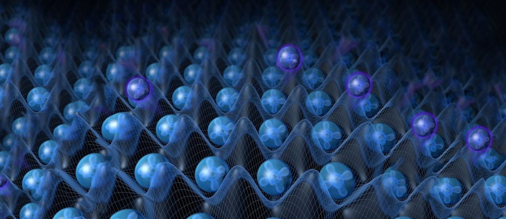

Types of Quantum Computers
Contents
Types of Quantum Computers¶

In the last section, we covered quite a lot by looking at what we need to make a quantum computer and the steps of quantum computation. In this section, we’ll look at some types of Quantum Computing and quantum computers.
Approaches to Quantum Computing¶
I will briefly mention here some approaches to Quantum Computing. We will not go into too much detail.
An approach is simply a way to do computation on a quantum system. It is the way to manipulate, control and measure the quantum system.
The two main approaches that one hears about a lot are: (1) Gate-based Quantum Computing and (2) Adiabatic Quantum Computing.
The Gate-based approach is very much similar to how we do classical computation, with the exception being that we use qubits instead of classical bits. Once we have our qubits, we apply our “gate operations” also known as our “circuit”.
The Adiabatic approach is less obvious, but relies on the Adiabatic theorem in Physics. The Adiabatic approach tells us to initialize our qubits in a particular low-energy state and then slowly apply changes to the qubits’ environment. We are still doing things to the qubits but in a more precautious manner. The idea is that if we do it slowly enough and in the right way, the qubits don’t “budge too much” energy-wise, and so that their final measured state most likely represents the lowest energy state of some complex problem.
The Adiabatic approach is therefore very applicable to finding the best solution(s) to an Optimization-type problem.
Types of Qubits¶
Apart from the specific approach used by a Quantum computer, we can differentiate types of Quantum computers according to the quantum objects that are used as qubits. Here are some of the main ones:
Superconducting qubits: A small electronic circuit containing a Josephson junction (which is made by thin non-superconducting material placed between two superconducting materials). The circuit operates like an artificial atom where electromagnetic radiation can be used to drive transitions between two energy-level states.
Photonic qubits: Quanta of light are called photons. Photonic qubits are therefore particles of light produced from a coherent light source (a laser).
Cold atoms trapped in an optical lattice (interfering laser beams). See Header Image.
Trapped Ions: “Charged atoms” that are controlled by electric and magnetic fields.
What do Quantum Computers look like?¶
This is what a quantum computer looks like!
An IBM Quantum Computer
 Credit: IBM
Credit: IBM
And here’s another one…
A D-Wave Quantum Computer
 Credit: D-wave
Credit: D-wave
Quantum computers are large devices made to keep qubits in a very cold and controlled environment in order to separate them from anything that can disturb them and make them lose their “quantumness”. The temperatures in a quantum computer can be colder than Outerspace!
The actual qubits are located in a quantum chip also called a quantum processing unit (QPU) inside the computer and small enough to fit into the palm of your hand.
Here’s a couple quantum chips for you to look at.
 Credit: IBM
Credit: IBM
 Credit: D-Wave
Credit: D-Wave
Which Companies Make Quantum Computers?¶
Companies that build quantum computers tend to specialize on using one particular approach to Quantum Computing and one type of qubit. Here are some Quantum Computing companies and the types of quantum computers they have:
IBM looks into Gate-based quantum computers and use superconducting qubits.
Google also applies the Gate-based approach with superconducting qubits.
Xanadu makes photonic quantum computers with squeezed light. Below is a cool video on how their photonic chips work.
IonQ uses ionized Ytterbium atoms (trapped ions) as qubits.
D-Wave uses the Adiabatic approach with superconducting qubits. Here’s a video on D-Wave’s Quantum Annealer.
Short Quiz¶
Try to answer the following questions on your own, then click to reveal.
What’s the name of the Quantum Computing approach that is suitable for optimization-type problems?
Adiabatic Quantum Computing relies on the Adiabatic theorem in Physics, which tells us that if we start off in a low-energy state for some simple problem and slowly evolve our environment to a more difficult problem, then our system will end-up in a low-energy state for the more difficult problem. This type of Quantum Computing is suitable for optimization problems.
Which types of qubits are trapped between interfering laser beams?
Cold atoms are trapped in the wells of an optical lattice. See Header Image.
Which types of qubits can be controlled by electric and magnetic fields?
Trapped ions! Ions are charged atoms and being charged means that they can be controlled with electric and magnetic fields.
Which types of qubits behave like artificial atoms?
Superconducting qubits are actually small electronic circuits made using a special circuit element called a Josephson junction. The circuit behaves like an artificial atom with different energy states. By using electromagnetic radiation, we can control the transitions between these states.
Which types of qubits are particles of light
Photonic qubits! The word “photonic” is from “photon”, which is a particle of light.